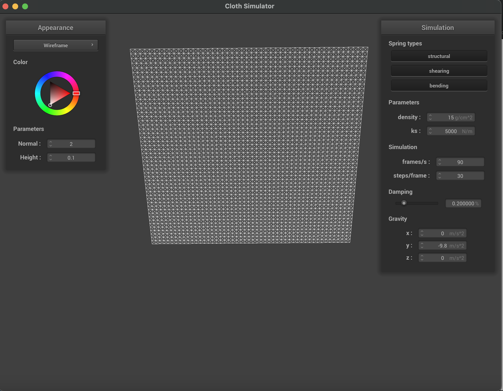
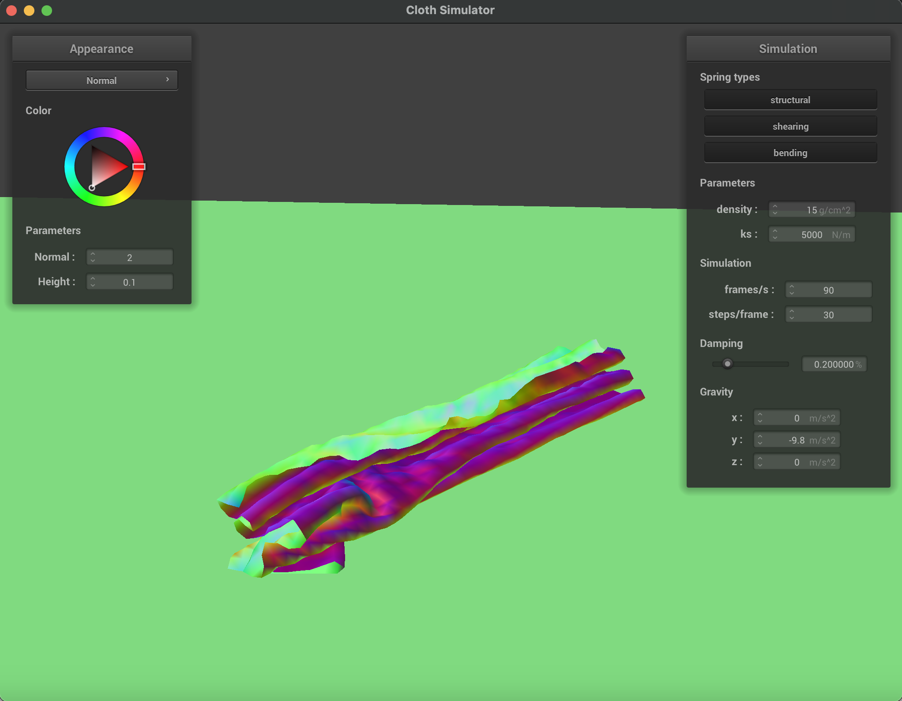

CS 184: Computer Graphics and Imaging, Spring 2023
Project 4: Cloth Simulator
Lawrence Lam
Overview
This project involved me delving into the process of building a cloth simulation system using a mass-spring model.
I explored the effect of various parameters on the behavior of our cloth and these included changing the spring constant, density, and damping.
Once we correctly handled those changing parameters we begin to handle collisions both with external objects and self-collisions.
Finally we explored shading techniques like Blinn-Phong, texture mapping, bump mapping, and displacement mapping that allowed us to render the cloth with more realistic lighting and material properties.
Part 1: Masses and springs
Walk through your implementation
To implement our point mass and spring grid, I first created an evenly spaced grid of point masses that follows the given width and size and their corresponding number of points.
Once the point mass grid is created we can move on to create the strings. To do this we simply iterate through every element in the point mass grid and create the corresponding structural, shearing, and bending springs wherever they are applicable.
For example, a structural constraints exist between a point mass and the point mass to its left. To check if this constraint exists we simply check if the current point mass has an x > 0, meaning it has a point mass to its direct left and if it does, create the corresponding structural constraint spring.
Take some screenshots of scene/pinned2.json from a viewing angle where you can clearly see the cloth wireframe
to show the structure of your point masses and springs.
|
|
Initial configuration ($\text{ks} = 5,000$)
|

|
|
Show us what the wireframe looks like (1) without any shearing constraints,
(2) with only shearing constraints, and (3) with all constraints.
|
No shearing constraints
|
|
Only shearing constraints
|
|
All constraints
|
Part 2: Simulation via numerical integration
Experiment with some the parameters in the simulation.
To do so, pause the simulation at the start with P, modify the values of interest, and then resume by pressing P again.
You can also restart the simulation at any time from the cloth's starting position by pressing R.
Describe the effects of changing the spring constant ks; how does the cloth behave from start to rest with a very low ks?
A high ks?
Changing the spring constant changes how "stiff" the springs are. This means with a higher ks, it will take more force to stretch the strings and they will apply a correspondingly greater force on the point masses they are connected to when stretched.
The inverse is true for a smaller ks, where it will take less force to stretch the string and it will apply a smaller force on the connected point masses when stretched. Visually, this can be shwon with the top of the cloth's resting position.
With a high ks, the cloth stays taught and the top of the cloth barely moves. With a small ks, the top of the cloth droops down with gravity as the force of gravity is enough to extend the springs.
|
High ks ($\text{ks} = 210,000$)
|
Low ks ($\text{ks} = 100$)
|
What about for density?
Since the cloth always has the same dimensions, changing the density means changing the mass of the material of the cloth.
As F=ma changing the mass of the cloth changes the force that the cloth will experience based on certain accelerations.
In this case the force of gravity on the cloth will increase with a larger mass and decrease with a smaller mass.
Since the next position of each point mass is determined by the sum of the forces acting upon it, a larger or smaller force of gravity while all other forces stay constant (like the springs) means that the cloth will have a different resting position.
In this case a high density will drag the cloth further down and a smaller density will lower the force of gravity and keep the springs more taught, straightening the cloth.
What about for damping?
Damping simulates the energy loss of energy that would occur in the physical world like friction and heat loss.
Therefore changing the damping effects the speed at which energy leaves the system. In this case a low damping means the cloth loses less energy over time and will take longer to come to rest.
By the same logic, the body of the cloth will also move faster as it falls and carry more momentum as it swings.
On the other hand, a high damping means there is a lot of resistance to change/movement and the cloth reflects that by slowly falling like a feather until it reaches its resting state.
|
High damping (Given half a second to fall)
|
Low damping (Given half a second to fall)
|
For each of the above, observe any noticeable differences in the cloth compared to the default parameters
and show us some screenshots of those interesting differences and describe when they occur.
 Default Parameters
Default Parameters
|
|
Comparison pictures are above, within every subsection (ks, density, damping).
Show us a screenshot of your shaded cloth from scene/pinned4.json in its final resting state!
If you choose to use different parameters than the default ones, please list them.
|
Default Camera position
|
Different Camera position
|
Part 3: Handling collisions with other objects
Walk through your implementation
To implement handling collisions with other objects, we first had to add two for loops in the simulate function that run through every point mass and check if they are colliding with any of the given collision objects.
To check if an object is colliding with a sphere object we take the distance of the point mass to the center of the sphere and check if it is smaller or equal to the radius. If it is, it means it is inside or on the sphere and we should calculate the tangent point.
To do this we take the normalized vector from the point mass' position to the center of the sphere and times it by the radius and add it to the center. After that we follow the formula of getting the vector between the tangent point and the last position times it by 1-f and adding it back to the last position.
To check if an object is colliding with a plane we get the distance from the pointmass to the plane and the distance from the last position to the plane.
If the point mass has crossed the plane, meaning that one of the distances are negative and the other is positive then we calculate the tangent point.
We then follow the formula given which includes adding the surface offset times the normal when calculating the vector from the last position to the correction point.
Show us screenshots of your shaded cloth from scene/sphere.json in its final resting state
on the sphere using the default ks = 5000 as well as with ks = 500 and ks = 50000.
|
$\text{ks} = 500$
|
Initial configuration ($\text{ks} = 5,000$)
|
$\text{ks} = 50,000$
|
|
Describe the differences in the results.
As we found in part 2 changing the spring constant modifies the "stiffness" of the springs.
This is shown when our cloth drapes over a spherical object as a smaller ks or a less stiff spring allows for the cloth to droop further as gravity elongates the springs.
On the other hand a high ks or a very stiff spring will not extend as far and therefore not droop as far down and will create less wrinkles.
Show us a screenshot of your shaded cloth lying peacefully at rest on the plane.
If you haven't by now, feel free to express your colorful creativity with the cloth!
(You will need to complete the shaders portion first to show custom colors.)
Part 4: Handling self-collisions
Show us at least 3 screenshots that document how your cloth falls and folds on itself,
starting with an early, initial self-collision
and ending with the cloth at a more restful state (even if it is still slightly bouncy on the ground).
|
Self collision 1
|

Self collision 2
|
Self collision 3
|
|
Vary the density as well as ks
and describe with words and screenshots how they affect the behavior of the cloth as it falls on itself.
|
$\text{density} = 1$
|
$\text{density} = 1500$
|
|
$\text{ks} = 100$
|
$\text{ks} = 200,000$
|
As we have shown before changing the density of the cloth mainly affects the cloth's mass as the area stays the same in our simulations.
With a higher density, or a heavier cloth, the cloth itself will fall faster and exert greater force on itself. This in turn makes the cloth less flexible and will have less wrinkles and folds.
With a low density, or a light cloth, the cloth itself will fall slower, exert a correspondingly smaller force on itself, and have noticable wrinkles and folds.
The spring constant determines the stiffness of the springs in our cloth which determine how resistant our cloth is to deformations.
With a high ks the cloth will be more resistant to deformation, bounce more strongly, and have fewer wrinkles as it tends to retain its original shape.
A low ks is simply the opposite, where the cloth is less resistant to deformation, bounces less, and has more wrinkles as it tends to fold as it falls on itself.
Part 5: Cloth Sim
Explain in your own words what is a shader program and how vertex and fragment shaders work together to create lighting and material effects.
A shader program is a program that determines the final appearance of a rendered object. It operates on individual vertices and fragments/pixels of an object to compute their final position, colors, and other attributes based on the given inputs like light sources and texture mappings.
Vertex shaders operate on every vertex of a 3D model. They then transform the 3D coordinates of each vertex from the object space to screen space.
In the end the vertex shader prepares the vertices of the 3D model for rendering by determing their final positions and attributes in the screen space.
Fragment/pixel shaders on the other hand compute the color of each pixel based on the varius textures, lighting, and material properties affecting the object.
These shaders are responsible for applying these effects to produce the final color of each pixel.
Combining these two allows us to create lighting and material effects as they handle the modeling and coloring of the rendered objects.
Explain the Blinn-Phong shading model in your own words.
Show a screenshot of your Blinn-Phong shader outputting only the ambient component, a screen shot only outputting the diffuse component, a screen shot only outputting the specular component, and one using the entire Blinn-Phong model.
In the Blinn-Phong shading model, the final color of a pixel is determined by considering three main components: ambient, diffuse, and specular lighting.
Ambient lighting represents the general light that illuminates a scene uniformly from all direction, it simply adds a base level of brightness to all objects in the scene.
Diffuse lighting represents the matte reflection of light from a surface. This is calculated with the angle between the surface normal and the direction of the light source, meaning that a surface facing the light is brighter than one facing away.
Specular lighting represents the reflection/shine of a surface. This takes into account the angle between the camera/viewer, the reflection direction, and the material of the surface.
|
Ambient component only
|
Diffuse component only
|
|
Specular component only
|
Complete Blinn-Phong model
|
Show a screenshot of your texture mapping shader using your own custom texture by modifying the textures in /textures/.
|
Starting position
|
Rest position
|
Show a screenshot of bump mapping on the cloth and on the sphere.
Show a screenshot of displacement mapping on the sphere.
Use the same texture for both renders.
You can either provide your own texture or use one of the ones in the textures directory,
BUT choose one that's not the default texture_2.png.
Compare the two approaches and resulting renders in your own words.
Compare how your the two shaders react to the sphere by changing the sphere mesh's coarseness by using -o 16 -a 16 and then -o 128 -a 128.
|
Bump Mapping on the Cloth
|
Bump Mapping on the Sphere
|
|
|
Displacement Mapping on the Sphere
|
Displacement Mapping on the Sphere (coarser mesh)
|
|
Bump mapping is raising or lowering bumps based on the texture's grayscale values, however the actual geometry of the object remains unchanged.
Displacement mapping on the other hand modifies the geomety of the object based on the grayscale values and results in actual raised bumps and depressions on the surface of the object.
As shown in the two displacement mappings above with a courser and smoother mesh, the geometry changes are less defined and detailed due to the fewer number of vertices.
On the smooth mesh the depressions and bumps have sharper edges and are overall more detailed.
Show a screenshot of your mirror shader on the cloth and on the sphere.
|
Mirror Shader on the Cloth
|
Mirror Shader on the Sphere
|
|
Contributions
I completed this project on my own.